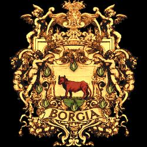

Set in the late 15th Century, at the height of the Renaissance,
The Borgias, a sumptuously produced historical drama written and created by Neil Jordan.
(The Crying Game, Interview with the Vampire.)
Opening on the deathbed of Pope Innocent VIII, "You will fight like dogs over this corpse I leave." His words prove all too true. While the majority of cardinals bicker amongst themselves, Rodrigo Borgia (Jeremy Irons)sets about using his considerable wealth to secure the throne of St Peter for himself. After numeruous bribes, delivered in the carcass of a roast suckling pig in one case!, murder, treachery and assanation, he suceeds, becoming pope Alexander VI. All this in the first episode !
The scene is set. The series chronicles the Borgias' struggle to maintain their grip on power, and their struggles with their numerous enemies, by whatever means necessary. The plots are thick, and the twists and turns will keep you watching each episode till the end.
With an excellent cast of characters from Irons as the man himself, Gina McKee as Caterina Sforza, Colm Feroe as Cardinal de la Rovere and many, many more.